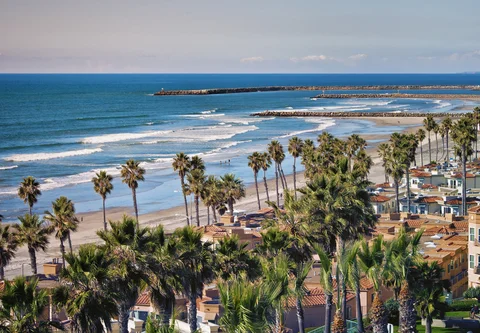

About Us!
The area around and in Carlsbad California used to be inhabited by indigenous people, namely the Kumeyaays and the Luiseno people who built villages near freshwater creeks. Eventually, Spanish explorers would further cultivate the area, but what really put Carlsbad on the map was a former sailor named John A. Frazier. In the 1880s John dug himself a well and started to make a living off of the water, which he would sell at the train station. The water was tested, and was noted as being very similar to the water at the most renowned spas throughout the world. The community grew in population and agriculture and the resulting city was named Carlsbad after one of the most famed spa towns of all, the Bohemian town of Karlsbad. (Now known as Karlovy Vary, Czech Republic)
Although Bountiful Foods is only a few years old, we feel that we can relate to this story. This business started small, with only a stand that sold fruit drinks and oranges in our once little neighborhood. Now, not only has the neighborhood grown, but our business as well! Our story is full of hard work and miracles, and we hope you will be a part of it!
Contact Us!
(555)555-5555
bountifulfoods@emailsite.com
Please input valid info into the above form!